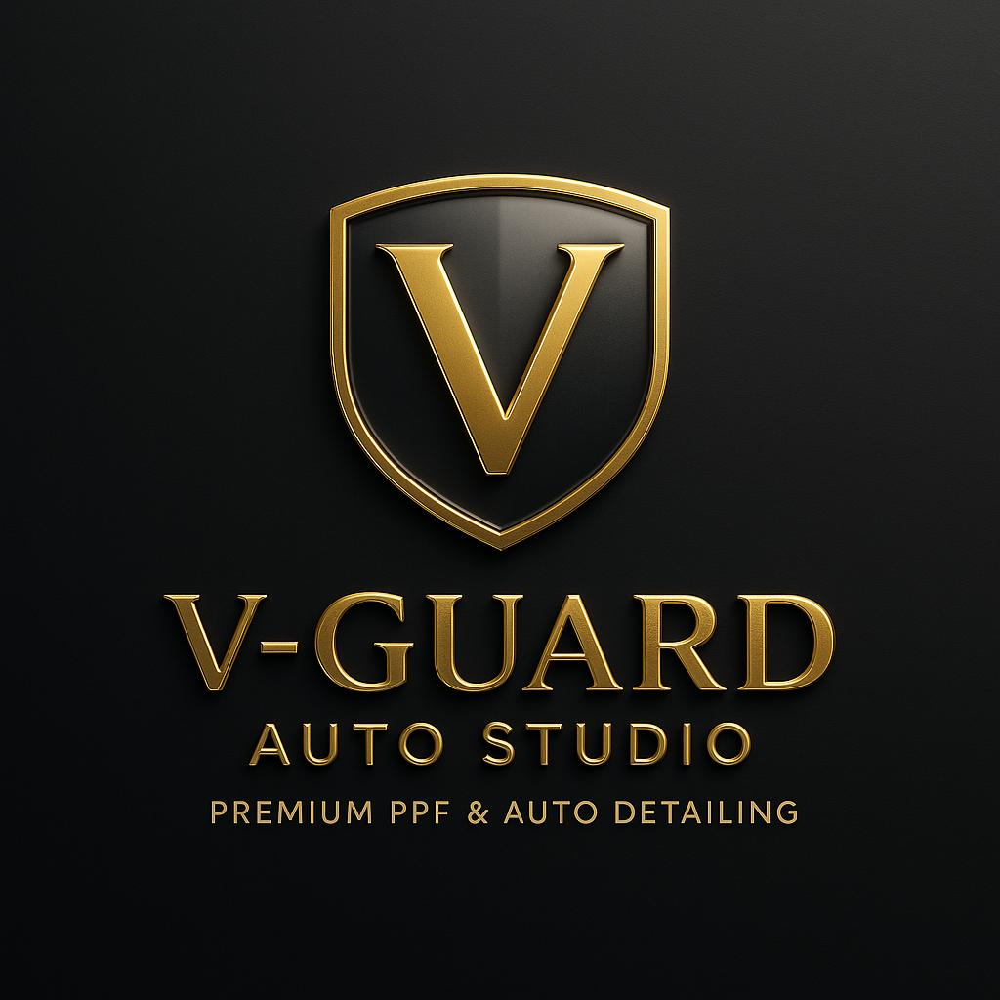

Невелика, але серйозна автомобільна студія. Більше часу йде на підготовку авто й нанесення плівки — тому результат чистіший і тримається довше. Айдентика має викликати у власника авто думку: «Ці люди акуратно працюватимуть з моїм автомобілем.»
Професійний
Точний
Стриманий
Технічний
Впевнений
Сучасний автомобільний
Напрямок: преміальна автомобільна майстерня + сучасний європейський дизайн. Не консьєрж-сервіс для суперкарів, не гоночний стиль, не вуличний тюнінг.
Логотип: оригінал і пласка версія
03 · Логотип

Оригінальний рендер — вивіска, стіна майстерні, інтро відео, 3D. Не для сайту, друку чи шаблонів соцмереж: фаски й хром не масштабуються і конфліктують зі стриманою системою.
V-GUARD
AUTO STUDIO
Плаский основний логотип — той самий щит, те саме V, той самий напис, одне пласке золото. Вектор, один колір, працює в будь-якому розмірі. Теглайн «Premium PPF & Auto Detailing» прибрано з лого — він живе в текстах.
Варіанти компонування
04 · Логотип
V-GUARD
AUTO STUDIO
A · Вертикальний— за замовчуванням. Обкладинки, друк, аватари з написом.
V-GUARD
AUTO STUDIO
B · Горизонтальний— хедер сайту, підпис email, інвойси.
C · Лише знак— favicon, аватар профілю, вотермарк, дрібні лейбли.
Логотип на темному і світлому
05 · Логотип
Золото на чорному Основний
Off-white на графіті Поверх фото, вотермарк на відео
Чорний на off-white Світлі секції, документи
Deep Gold на off-white Лише коли золото потрібне на світлому. Ніколи #C4A24D на світлому — надто слабкий контраст.
Охоронне поле й мінімальний розмір
06 · Логотип
XXXX
Охоронне поле
X = ¼ висоти щита з кожного боку. Ніщо інше — текст, край фото, інші логотипи — не заходить у цю зону.
Мінімальний розмір
Лише знак: 24 px екран / 8 мм друк. Горизонтальний: 120 px / 30 мм завширшки. Вертикальний: 72 px / 20 мм завширшки.
Розміщення
Ліворуч угорі або по центру. На фото — краще знак у куті, ніж повний логотип поверх зображення.
Неправильне використання
07 · Логотип
Золоті градієнти чи металеві фони
Розтягування, нахил чи поворот
Будь-який колір поза палітрою
Світле золото на світлому — не проходить контраст
Також не робити: тіні й світіння, обводка навколо напису, знак усередині іншої фігури, прапори чи маркери країни.
Основні кольори
08 · Колір
Studio Black
#0B0B0C · RGB 11 11 12
Основний фон. Близько 60% будь-якого макета.
Guard Gold
#C4A24D · RGB 196 162 77
Лише акцент: логотип, основний CTA, тонкі лінії, лейбли. Менше 10% будь-якої поверхні.
Off-White
#F2EFE9 · RGB 242 239 233
Текст на темному; фон контрастних секцій і документів.
Другорядні кольори і пропорції
09 · Колір
Graphite
#16171A
Картки, панелі, хедер
Deep Gold
#7F6820
Золотий текст на світлому, при наведенні
Grey 400
#A3A39F
Другорядний текст на темному
Grey 700
#3A3B3F
Рамки, роздільники, сітка
Grey 600
#5C5D61
Другорядний текст на світлому
Confirm Green
#2E7D4F
Лише форми та WhatsApp
Пропорції на типовій темній сторінці
60% чорний
20% графіт
12% off-white текст
≤ 8% золото
Золото ніколи не заповнює площу більшу за кнопку. Жодних золотих фонів секцій, градієнтів чи золотих текстових блоків. Якщо макет починає відчуватися «золотим» — прибирайте золото, доки він знову не стане чорним.
Типографіка
10 · Шрифт · Приклади
Aa
Instrument Sans
Один шрифт для всього. Нейтральний, трохи технічний, добре читається на екрані до малих розмірів. Насиченості 400 / 500 / 600. Відкрита ліцензія (Google Fonts). Другого UI-шрифту немає — напис у логотипі зберігає свою гарнітуру (Cinzel) і ніколи не з’являється в тексті. Instrument Sans має лише латиницю: для української комунікації резервний шрифт — Manrope (у цій презентації).
Табличні цифри для цін і характеристик: €1.290 · 12 мм · 8 років
Display / H1 · 500Захистіть покриття авто.
H2 · 500Захисна плівка PPF
H3 · 500Пакет «Повний фронт»
Основний текст · 400Ретельна підготовка поверхні перед кожним нанесенням. Загорнуті краї там, де дозволяє панель.
Збережіть оригінальний вигляд. Додайте шар, який бере удар на себе.
Захисна плівка — прозорий уретановий шар на панелях, найбільш вразливих до сколів і дорожнього сміття. При акуратному нанесенні майже непомітна.
Отримати розрахунокПереглянути послуги
Технічний блок
ПлівкаPPF, глянець, 190 мкм
ПокриттяПовний фронт
КраїЗагорнуті, де можливо
Час у студії3–4 дні
Цінавід €1.290
Правила: заголовки з великої лише першої літери, без знаків оклику, великі літери лише для лейблів і кнопок, ціни завжди з «від», якщо не фіксовані.
Графічні елементи
12 · Графіка
Тонка золота лінія 1 px. Роздільники секцій, під лейблами, акценти карток. Ніколи товща за 2 px.
Лінія кузова Одна-дві довгі криві за мотивами плечової лінії авто. Лише фон, низький контраст, ніколи не перетинає текст.
Ледь помітна сітка + кутові мітки Сітка 48 px із контрастом 10%. Кутові мітки обрамляють фото й «технічні» блоки.
01 — PreparationPPF · Повний фронтTesla Model 3
Технічні лейбли Великі літери, розріджений трекінг, нумеровані кроки. Опційний контурний тег для моделі авто чи послуги.
Не в системі: вогонь, картаті прапори, лінії швидкості, карбонова текстура, сліди шин, силуети авто, 3D-хром, важкі градієнти.
Стиль іконок
13 · Графіка
Захист
Шар PPF
Тонування
Обклеювання
Часткове обклеювання
Час
Гідрофобність
Автомобіль
Студія
WhatsApp
Побудова
Контурні, обводка 1.5 px при 48 px, круглі кінці й з’єднання, радіус кутів 2 px. Без заливок, без двоколірності.
Колір
Золото на темному для списків переваг; off-white або чорний для UI (навігація, форми). Один колір на іконку.
Застосування
Списки послуг, кроки процесу, контакти. Не як декор і не більше за 64 px. Рекомендована бібліотека: Lucide (stroke 1.5).
Стиль фотографії
14 · Фото
Світло — контрольоване, м’яке, з одного боку. Темне або нейтральне оточення. Без кольорового LED.
Контраст — високий, але реалістичний. Чорне лишається чорним, золото в кадрі — лише якщо це логотип.
Сюжет — показувати роботу, не тільки авто: краї, стики, підготовка, руки, готові панелі.
Уникати — ширококутних спотворень, HDR, важких віньєток, «мокрих» вуличних кадрів, людей, що позують біля авто.
Список кадрів
15 · Фото
Кожен проєкт
01Авто на приїзді, той самий ракурс, що й фінальний
02Підготовка: мийка, деконтамінація, маскування
03Нанесення, руки в кадрі
04Крупні плани країв і стиків
05Готове авто, ¾ спереду і ¾ ззаду
Бібліотека деталей
06Поверхня плівки під ковзним світлом
07Краї на фарах і дзеркалах
08Тонування зсередини і ззовні
09Інструменти, леза, ракелі на чистій поверхні
10Команда за роботою, без погляду в камеру
Формат: 3:2 або 4:5 для соцмереж, 16:9 для головного екрана сайту. Знімати в RAW, баланс білого — нейтральний, без фільтрів і пресетів.
Кнопки і CTA
16 · Компоненти · Приклад
На темному
Отримати розрахунокПереглянути послугиWhatsApp
Основна — золота заливка, чорний текст. Одна на екран. При наведенні: #D4B462.
Другорядна — контур 1 px off-white. При наведенні: заливка off-white, чорний текст.
WhatsApp — третинний контур, золота іконка. Ніколи зелена заливка на темному.
На світлому
Отримати розрахунокПереглянути послугиТекстове посилання →
Основна — чорна заливка. Золото як заливка на світлому не використовується.
Форма — радіус 2 px, висота 64 px, бокові відступи 40 px. Ніколи форма «пігулки».
Текст — дієслово + об’єкт, 1–3 слова. Без «Зараз!», без стрілок на основних кнопках.
Картка послуги
17 · Компоненти · Приклад
01 — Захист
Захисна плівка PPF
Прозора самовідновлювана плівка на панелях, що приймають сколи. Ретельна підготовка поверхні, загорнуті краї там, де дозволяє панель.
від €1.290Детальніше →
02 — Комфорт
Тонування скла
Преміальні керамічні плівки для захисту від тепла й UV. Відтінки в межах нідерландського законодавства, розкрій під скло, без видимих стиків.
від €290Детальніше →
03 — Зовнішній вигляд
Обклеювання авто
Повна зміна кольору або часткове обклеювання: дах, дзеркала, видалення хрому, акценти. Знімається, фарба під плівкою лишається оригінальною.
від €190Детальніше →
Анатомія картки: фото 3:2 → нумерований лейбл категорії → H3 → опис у два рядки → ціна й лінк на тонкій лінії. Поверхня Graphite, рамка 1 px Grey 700, радіус не більше 4 px, без тіні. При наведенні: рамка стає золотою.
Картка портфоліо
18 · Компоненти · Приклад
PPF · Повний фронт + пороги
BMW M340i, Brooklyn Grey
4 дні Глянець 190 мкм
Часткове обклеювання
Tesla Model Y · Видалення хрому
1 день
Тонування скла
Audi RS6 · Керамічна 20%
½ дня
Запис портфоліо = лейбл послуги · авто + колір · час у студії · характеристика плівки. Факти, не прикметники. Переконує фото.
До / Після
19 · Компоненти · Приклад
Volvo V60 · Заднє скло · ТонуванняСлайдер на сайті · розділений кадр у соцмережах
Той самий кадр
Та сама позиція камери, той самий об’єктив, те саме світло. Змінюється лише робота. Інакше порівняння не викликає довіри.
Лейбли
«До» на чорній плашці, «Після» на золотій (на фото-прикладі — англійські написи). Один тонкий золотий роздільник. Без стрілок, без «WOW», без червоних кружечків.
Підпис
Авто · панель · послуга · плівка. Опційно одне речення про те, що виправлено. Без суперлативів.
Відгуки
20 · Компоненти · Приклад
★★★★★Google
«Зробили на день довше, ніж обіцяли, бо бампер потребував додаткової підготовки. Не видно, де закінчується плівка.»
Jeroen V.
BMW 3 Series · PPF повний фронт
★★★★★Google
«Чітко пояснили, який відтінок дозволений, без нав’язування. Чисті краї, без пилу під плівкою.»
Sanne de B.
Tesla Model 3 · Тонування скла
Правила
Лише реальні цитати, дослівно, з джерелом (Google, WhatsApp — із дозволу).
Ім’я + авто + послуга — ніколи стокових аватарів чи вигаданих фото.
Зірки Deep Gold на світлому, Guard Gold на темному. Без бейджів на кшталт «Найкращий рейтинг».
Перевага конкретиці: що зроблено, скільки часу, що клієнт помітив.
Пакети і ціни
21 · Компоненти · Приклад
PPF · Частковий фронт
від €790
Бампер Частина капота (60 см) Частина крил Ковпаки дзеркал
1–2 дні в студії
Отримати розрахунок
Найчастіше обирають
PPF · Повний фронт
від €1.290
Бампер Капот повністю Крила повністю Ковпаки дзеркал, фари Краї дверей
3–4 дні в студії
Отримати розрахунок
PPF · Весь автомобіль
за запитом
Усі пофарбовані панелі Загорнуті краї всюди Опційно матове покриття Гарантія на плівку 10 років
5–7 днів у студії
Отримати розрахунок
Ціни — «від», з BTW, із вказаним часом у студії: час є частиною обіцянки. Один виділений пакет із золотою рамкою і тегом; решта нейтральні. Без перекреслених знижок і таймерів.
Фото насамперед. Чергуються три типи постів: готове авто, деталь/процес, до/після. Текст на фото — лише як дрібний розріджений лейбл у куті.
Відео (TikTok / Reels)
Той самий матеріал, що й зараз, нова обгортка: без рожевих плашок, емодзі та прапорів. Один рядок off-white тексту на чорній плашці, ліворуч унизу, Instrument Sans. Підписи англійською (NL — де доречно).
Вотермарк
Лише знак, off-white 70%, праворуч унизу, 5% ширини кадру.
Мова
Нейтрально-європейська. Без прапорів країн, без заяв «найкращі», без хайпових текстів під музику.
Якість важливіша за швидкістьПовний фронт займає у нас 3–4 дні. Ось чому.
Ритм сітки: не більше однієї текстової плитки на шість постів, завжди чорна із золотим лейблом.
Обкладинки Instagram / TikTok
25 · Соцмережі · Приклад
PPF · Повний фронт
BMW M340i — день 2: краї
Тонування скла
Який відтінок дозволений у Нідерландах?
До / Після
Сколи. Потім плівка.
Volvo XC60 · Капот
Формат — 1080×1920, фото на весь кадр, текст у нижній третині на м’якому чорному градієнті.
Текст — золотий лейбл категорії + один заголовок, до 6 слів, з великої лише перша літера. Однакова позиція на кожній обкладинці.
Текстова обкладинка — чорна, знак ліворуч угорі, заголовок ліворуч по центру. Лише для відкриття серій.
Фото — 10+ реальних фото зі списку кадрів, оновлення щомісяця. Без картинок лише з логотипом, окрім аватара.
Опис — три послуги, ідея «якість понад швидкість», робота за записом.
V-GUARD
Обкладинка — реальне фото, не графіка. Авто + вхід у студію, щоб люди впізнавали місце. Невелика плашка з логотипом ліворуч унизу — лише якщо вивіски немає в кадрі.
«Професійне нанесення PPF із ретельною підготовкою поверхні.»
«Скажіть, на чому ви їздите і що хочете захистити — ми порадимо правильний варіант.»
«Повний фронт займає 3–4 дні. Цей час іде на підготовку.»
Професійно, прямо, спокійно. Для власника авто, який не є експертом. Короткі речення. Цифри там, де вони допомагають.
Не так
«Трансформуйте свій досвід водіння з неперевершеною досконалістю.»
«Найкраща PPF-студія в Нідерландах. №1 за якістю.»
«Бездоганний, ідеальний результат щоразу.»
«Подивіться на результат! 🔥🔥🔥»
Заборонено: найкращі, №1, лідер галузі, бездоганно, ідеально, найвища якість у Європі, неперевершений. Впевнені заяви мають бути перевірюваними: характеристика плівки, роки гарантії, дні в студії.
Що підтримує і що руйнує бренд
28 · Підсумок
Підтримує
Чорні поверхні, золото як тонкий акцент, багато порожнього простору